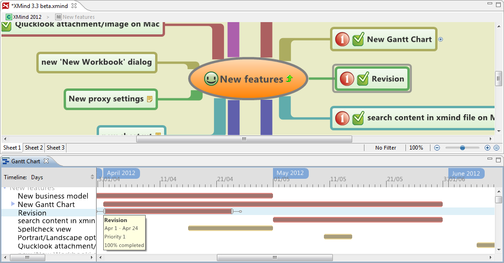
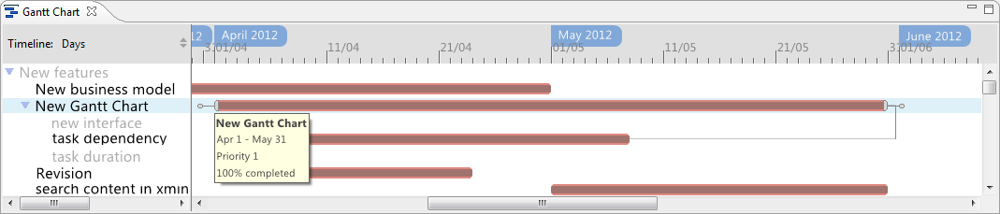

After adding all task details in the TaskInfo view, you can navigate them in the Gannt Chart view. Please select 'View - Show Gantt Chart' from menu.
Xmind with Gantt Chart  The upper half is the mind map, the bottom half the Gantt Chart view. Gantt Chart always shows the tasks in current mind map. So its content will be changed while watching different map, sheet, and even drilldown any a topic.
Gannt Chat view has two parts, tree style tasks list and task bar view with time indicator.  In the bar view, different colors mean different priority. The line between two tasks means the these two tasks have dependency relationship.
Besides navigating the tasks, here you also can,
- Change timeline scale to Hours, Days, Weeks or Months.
- Move the mouse to a task, show all its details, like start/end date, priority, and status.
- Select a task and move, you can change its start/end date.
- Select one end of a task and move, you can change its duration.
- Select the little circle at start or end of a task and you can link to any a task. Then you can set a dependency relationship between them.
Note: the Dependency type
- Finish to Start, Task A cann't be started untill Task B is finished.
- Start to Finsih, Task A cann't be finished untill Task B is started.
- Start to Start, Task A cann't be started untill Task B is started.
- Finish to Finish, Task A cann't be finished untill Task B is finished.